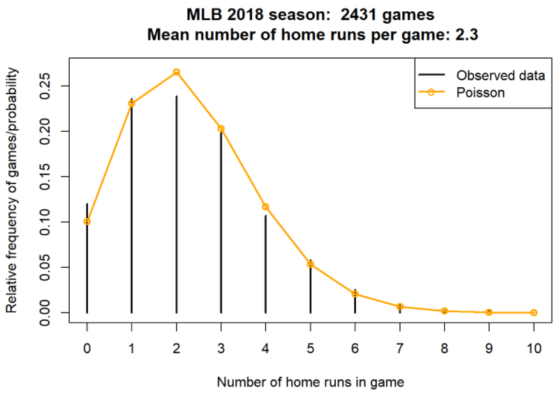
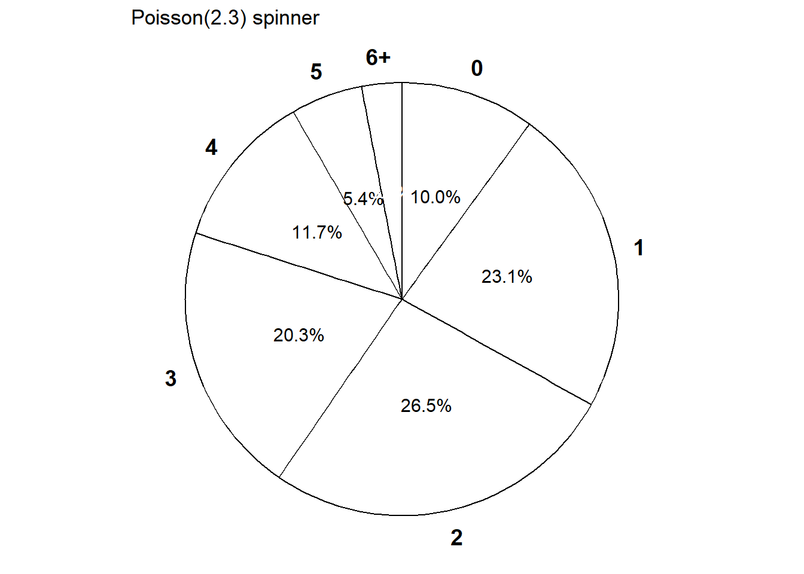
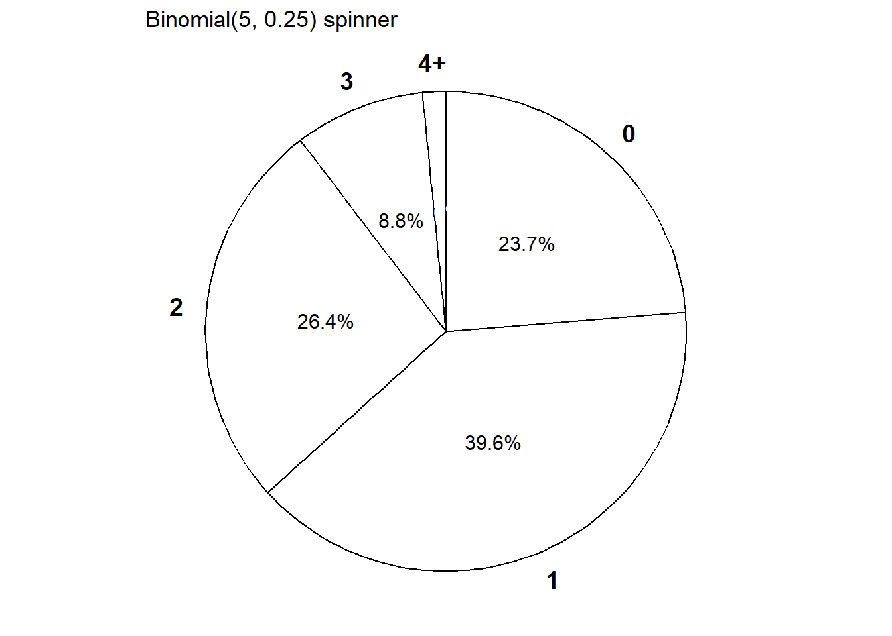

6 Commmon Discrete Distributions
6.1 Poisson Distributions
Example 6.1 Let \(X\) be the number of home runs hit (in total by both teams) in a randomly selected Major League Baseball game. Technically, there is no fixed upper bound on what \(X\) can be, so mathematically it is convenient to consider \(0, 1, 2, \ldots\) as the possible values of \(X\). Assume that the pmf of \(X\) is \[ p_X(x) = e^{-2.3} \frac{2.3^x}{x!}, x = 0, 1, 2, \ldots \] This distribution is called the Poisson(2.3) distribution.
- Compute \(\text{P}(X = 3)\). Then interpret the value as a long run relative frequency, and a relative likelihood.
- Construct a table, plot, and spinner corresponding to the distribution of \(X\).
- Compute and interpret \(\text{P}(X \le 2)\).
- Compute and interpret \(\text{P}(X \le 13)\). (The most home runs ever hit in a baseball game is 13.)
| \(x\) | \(p(x)\) | Value |
|---|---|---|
| 0 | \(e^{-2.3}\frac{2.3^0}{0!}\) | 0.100259 |
| 1 | \(e^{-2.3}\frac{2.3^1}{1!}\) | 0.230595 |
| 2 | \(e^{-2.3}\frac{2.3^2}{2!}\) | 0.265185 |
| 3 | \(e^{-2.3}\frac{2.3^3}{3!}\) | 0.203308 |
| 4 | \(e^{-2.3}\frac{2.3^4}{4!}\) | 0.116902 |
| 5 | \(e^{-2.3}\frac{2.3^5}{5!}\) | 0.053775 |
| 6 | \(e^{-2.3}\frac{2.3^6}{6!}\) | 0.020614 |
| 7 | \(e^{-2.3}\frac{2.3^7}{7!}\) | 0.006773 |
| 8 | \(e^{-2.3}\frac{2.3^8}{8!}\) | 0.001947 |
| 9 | \(e^{-2.3}\frac{2.3^9}{9!}\) | 0.000498 |
| 10 | \(e^{-2.3}\frac{2.3^{10}}{10!}\) | 0.000114 |
| 11 | \(e^{-2.3}\frac{2.3^{11}}{11!}\) | 0.000024 |
| 12 | \(e^{-2.3}\frac{2.3^{12}}{12!}\) | 0.000005 |
| 13 | \(e^{-2.3}\frac{2.3^{13}}{13!}\) | 0.000001 |
| 14 | \(e^{-2.3}\frac{2.3^{14}}{14!}\) | 0.000000 |

- A discrete random variable \(X\) has a Poisson distribution with parameter \(\mu>0\) if its probability mass function \(p_X\) satisfies \[ p_X(x) = \frac{e^{-\mu}\mu^x}{x!}, \quad x=0,1,2,\ldots \]
- The function \(\mu^x / x!\) defines the shape of the pmf. The constant \(e^{-\mu}\) ensures that the probabilities sum to 1.
- Poisson distributions are often used to model random variables which count the number of “relative rare” events that occur.
- If \(X\) has a Poisson(\(\mu\)) distribution, \(\text{P}(X = 0) = e^{-\mu}\) and the probabilitiies of possible values follow the
\[ \text{Poisson(}\mu\text{) pattern:}\quad x \text{ is } \frac{\mu}{x} \text{ as likely as } x-1 \quad \text{ (for } x = 1, 2, 3, \ldots) \]
6.2 Binomial Distributions
Example 6.2 Consider an extremely simplified model for the daily closing price of a certain stock. Every day the price either goes up or goes down, and the movements are independent from day-to-day. Assume that the probability that the stock price goes up on any single day is 0.25. Let \(X\) be the number of days in which the price goes up in the next 5 days.
- Compute and interpret \(\text{P}(X=0)\).
- Compute the probability that the price goes up on the first day and then down on the following four days.
- Why is \(\text{P}(X=1)\) different from the probability in the previous part? Compute and interpret \(\text{P}(X=1)\).
- Suggest a general formula for the probability mass function of \(X\).
- A discrete random variable \(X\) has a Binomial distribution with parameters \(n\), a nonnegative integer, and \(p\in[0, 1]\) if its probability mass function is \[\begin{align*} p_{X}(x) & = \binom{n}{x} p^x (1-p)^{n-x}, & x=0, 1, 2, \ldots, n \end{align*}\]
- The binomial coefficient (read “\(n\) choose \(x\)”) \[ \binom{n}{x} = \frac{n!}{x!(n-x)!} \] counts the number of success/failure sequences of length \(n\) in which there are exactly \(x\) successes. (Remember: by definition \(0! = 1\).)
Example 6.3 Continuing Example 6.2.
- Construct a table, plot, and spinner representing the distribution of \(X\).
- Compute and interpret \(\text{P}(X \le 2)\).
| \(x\) | \(p(x)\) | Value |
|---|---|---|
| 0 | \(\binom{5}{0}0.25^0(1-0.25)^{5-0}\) | 0.237305 |
| 1 | \(\binom{5}{1}0.25^1(1-0.25)^{5-1}\) | 0.395508 |
| 2 | \(\binom{5}{2}0.25^2(1-0.25)^{5-2}\) | 0.263672 |
| 3 | \(\binom{5}{3}0.25^3(1-0.25)^{5-3}\) | 0.087891 |
| 4 | \(\binom{5}{4}0.25^4(1-0.25)^{5-4}\) | 0.014648 |
| 5 | \(\binom{5}{5}0.25^5(1-0.25)^{5-5}\) | 0.000977 |

Example 6.4 Continuing Example 6.2.
- What does the random variable \(5-X\) represent? What is its distribution?
- Suppose that the price is currently $100 and each it either moves up $2 or down $2. Let \(S\) be the stock price after 5 days. How does \(S\) relate to \(X\)? Does \(S\) have a Binomial distribution?
- Recall that \(X\) is the number of days on which the price goes up in the next five days. Suppose that \(Y\) is the number of days on which the price goes up in the ten days after that (days 6-15). What is the distribution of \(X+Y\)? (Continue to assume independence between days, with probability 0.25 of an up movement on any day.)
- Imagine a box containing tickets
- Each ticket is labeled either 1 (“success”) or 0 (“failure”)
- \(p\) is the proportion of tickets in the box labeled 1 (“success”); the rest are labeled 0 (“failure”).
- Randomly select \(n\) tickets from the box with replacement and let \(X\) be the number of tickets in the sample that are labeled 1.
- Then \(X\) has a Binomial(\(n\), \(p\)) distribution.
- Since the tickets are labeled 1 and 0, the random variable \(X\) which counts the number of successes is equal to the sum of the 1/0 values on the tickets.
- The above situation involves a sequence of Bernoulli(\(p\)) trials.
- There are only two possible outcomes, “success” (1) and “failure” (0), on each trial.
- The unconditional/marginal probability of success is the same on every trial, and equal to \(p\)
- The trials are independent
- If sampling with replacement, or
- If sampling without replacement but the population size (number of tickets in the box) is much larger than the sample size \(n\)
- If \(X\) counts the number of successes in a fixed number, \(n\), of Bernoulli(\(p\)) trials then \(X\) has a Binomial(\(n, p\)) distribution.
Example 6.5 In each of the following situations determine whether or not \(X\) has a Binomial distribution. If so, specify \(n\) and \(p\). If not, explain why not.
- Roll a die 20 times; \(X\) is the number of times the die lands on an even number.
- Roll a die 20 times; \(X\) is the number of times the die lands on 6.
- Roll a die until it lands on 6; \(X\) is the total number of rolls.
- Roll a die 20 times; \(X\) is the sum of the numbers rolled.
- Shuffle a standard deck of 52 cards (13 hearts, 39 other cards) and deal 5 without replacement; \(X\) is the number of hearts dealt. (Hint: be careful about why.)
- Roll a fair six-sided die 10 times and a fair four-sided die 10 times; \(X\) is the number of 3s rolled (out of 20).
- Randomly select a sample of 35 Cal Poly students; \(X\) is the number of students in the sample who are CA residents.
Example 6.6 Donny Dont is thoroughly confused about the distinction between a random variable and its distribution. Help him understand by by providing a simple concrete example of two different random variables \(X\) and \(Y\) that have the same distribution. Can you think of \(X\) and \(Y\) that have the same distribution but for which \(\text{P}(X = Y) = 0\)? (Hint: think coin flipping.)